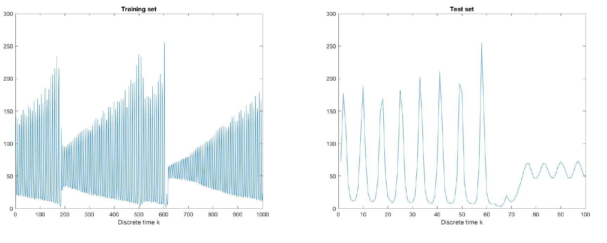
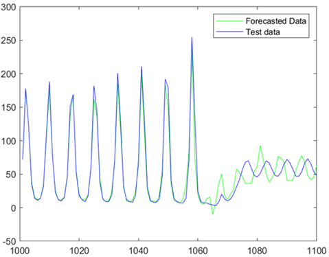
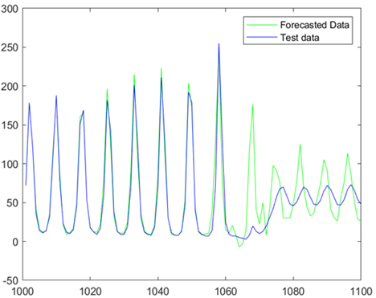
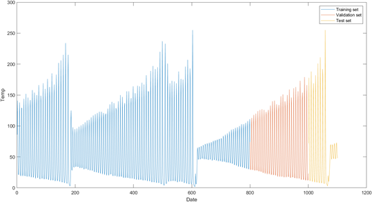
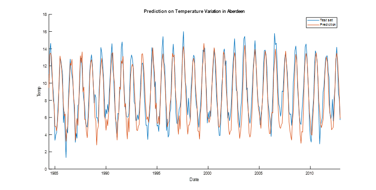
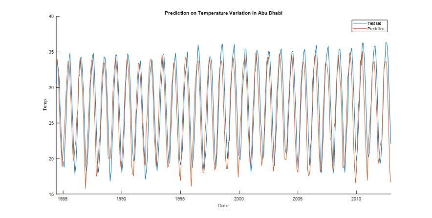

This project focuses on applying the feedforward neural networks to typical machine learning tasks, such as time-series prediction. For time-series prediction, we first investigate one benchmark data set, namely, the Santa Fe dataset. Then, we analyze a global temperature data set.
A time series is a sequence of observations, ordered in time. Forecasting involves training a model on historical data and using them to predict future observations. A simple example is a linear auto-regressive model. The linear auto-regressive (AR) model of a time-series \(Z_t\) with \(t = 1, 2, ..., \infty\) is given by:
with \(a_i \in \mathbf{R}\) for \(t = 1, 2, ...,p\) and \(p\) p being the model lag. The prediction for a certain time t is equal to a weighted sum of the previous values up to a certain lag \(p\). At the same time, the nonlinear variant (NAR) is described as:
The Santa Fe dataset is obtained from a chaotic laser which can be described as a nonlinear dynamical system. Given are 1000 training data points. The aim is to predict the next 100 points (it is forbidden to include these points in the training set!). The training data stored in lasertrain.dat and the test data contained in laserpred.dat are shown in Figure 1.

A grid search was performed to assess which hyperparameters yield the best performance in terms of Mean Squared Error. The grid search considered combinations of training algorithms, lag values ranging from 15 up to 70, and architectures with different number of layers and hidden units. The best solution for a single layer was with a lag of 20 and 15 neurons, resulting in an MSE of 701.12. Figure 2.1.1 displays the prediction of the network over the test set. The overall best solution corresponds to a network with 30 neurons in the first layer and 20 in the second, with a lag of 45. The approximation to the test values is adequate as can be seen in Figure 2.1.2. with an MSE of 224. Both networks were train with the Levenberg-Marquardt optimization algorithm and 50 epochs.



The most common way to construct a validation set is to sample a subset within the training set or to cross validate with a certain number of folds. This approach is not suitable for time-series given that sub-setting random data points for validation might result in a situation where the validation data points are from earlier in the time series than the training set, hence during validation we would be predicting the past with future data, which does not represent the situation we face in practice. Furthermore, data points in a time series are dependent, hence it is not reasonable to predict a random point with an ANN trained from an ordered series. Instead, a validation set for a time series needs to be sampled as the most recent sequence in the training time series. Nevertheless, this approach might not be fruitful if the validation portion of our time series has a particular pattern which is not representative of the whole series, in which case the optimal parameters will be selected to minimize the error for the non-representative validation pattern, ending up with a poor performance for test data and forthcoming data. Considering the data structure depicted in Figure 2.1.3, we notice that the validation portion cannot consider all the timeseries nuances e.g., the final section of the test set, approximately Date 1050 onwards is completely different with respect to the validation portion of the time series.
After conducting the same grid search as before, but using the continuous validation set this time as in Figure 2.1.3, the accuracy of the network decreased which supports the idea that performance won’t be enhanced if the validation set is not representative of the complete timeseries.
Climate change is one of the biggest threats of our age. In this section, we work on a global climate change prediction data set using timeseries methods. Specifically, we will use the non-linear auto-regression (NAR) for this case. The data can be downloaded from [1]. Note that this dataset is repackaged from a newer compilation put together by the Berkeley Earth, which is affiliated with Lawrence Berkeley National Laboratory. The Berkeley Earth Surface Temperature Study combines 1.6 billion temperature reports from 16 pre-existing archives. In this dataset, we only use the global land temperature in GlobalLandTemperaturesByCity.csv, which includes:
• Date: starts in 1750 for average land temperature and 1850 for max and min land temperatures;
• LandAverageTemperature: global average land temperature in celsius;
The historical average temperatures for Aberdeen and Abu Dhabi were select from 1850 up to 2015. After conducting a grid search (Table 1 and Table 2), for a set of combination of number of hidden units and lag sizes, the performance over the test set in both cities is adequate. Figures 2.1. and 2.2 display forecasts that are accurate with respect to the test set. Each combination was conducted 5 times and the found MSE were averaged to attain a more stable solution. A closer grid search, that iterates with less gap through the combination of hyper-parameters that already displayed good solutions in the original search could lead to find a better solution. Testing other optimization algorithms might also increase the forecast accuracy.


|
Hidden Units
|
|||
|---|---|---|---|
| Lag | 30 | 50 | 70 |
| 25 | 3151 | 1086 | 729 |
| 35 | 335 | 831 | 506 |
| 45 | 50 | 171 | 327 |
| 55 | 121 | 151 | 358 |
| 65 | 47 | 178 | 214 |
| 75 | 78 | 175 | 192 |
| 85 | 94 | 114 | 125 |
| 95 | 77 | 69 | 61 |
| 105 | 130 | 102 | 51 |
| 115 | 39 | 13 | 8 |
| 125 | 28 | 19 | 14 |
|
Hidden Units
|
|||
|---|---|---|---|
| Lag | 30 | 50 | 70 |
| 25 | 2964 | 5060 | 4876 |
| 35 | 4622 | 3123 | 2460 |
| 45 | 1577 | 2110 | 2031 |
| 55 | 1702 | 1436 | 1055 |
| 65 | 1095 | 784 | 661 |
| 75 | 595 | 604 | 466 |
| 85 | 641 | 367 | 437 |
| 95 | 299 | 222 | 270 |
| 105 | 322 | 45 | 78 |
| 115 | 76 | 109 | 9 |
| 125 | 16 | 34 | 21 |
By looking at the structure of the two cities’ time series, we notice that they share the same pattern except by the range in which they oscillate, which in the case of Abu Dhabi is given by higher temperatures. For Abu Dhabi and Aberdeen, we obtained the same optimal hyper-parameters, and their respective performance is extremely similar. This similarity suggests that the tuned hyper-parameters of one city might be accurate to forecast the temperature of other cities if they share a similar pattern throughout the time series.